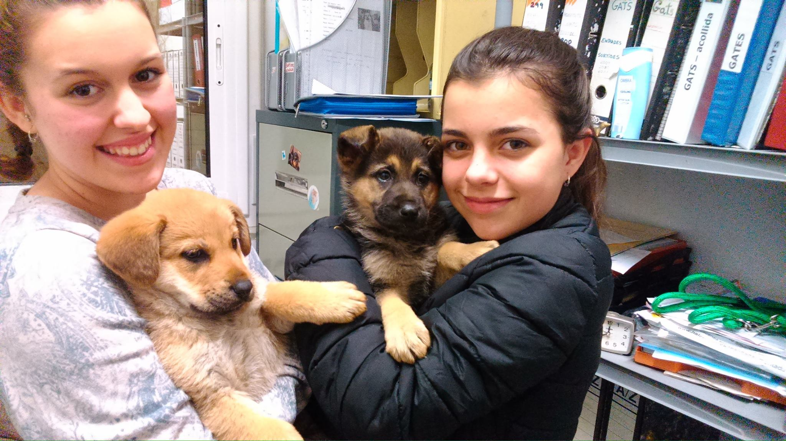
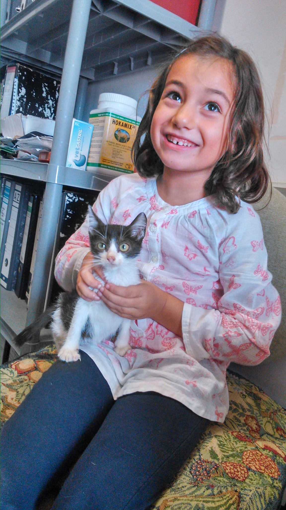
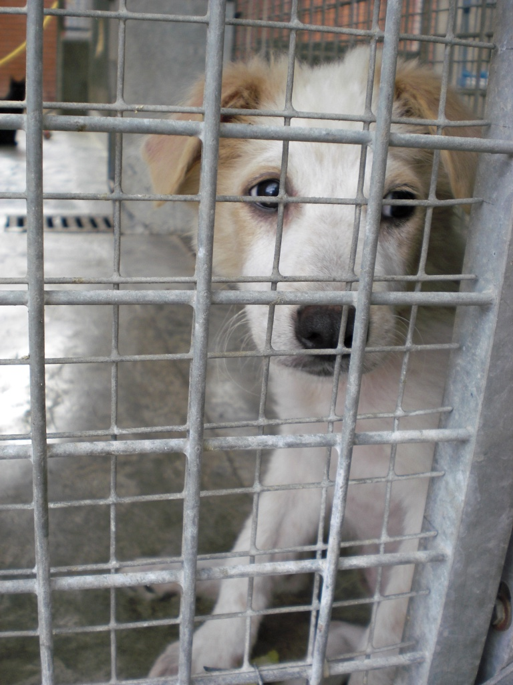

Des d'aquí fem una crida a la importància de l'adopció. Penseu que si adopteu un gos, no només li esteu donant amb ell una nova vida, sinó que també ajudeu a la resta de gossos que es queden a la gàbia a tenir una mica més d'espai vital, fet nolt important dabant l'augment dels abandonaments. Volem animar-vos doncs, a que ens vingueu a veure, no podrem superar aquesta crisi sense la vostra ajuda!
Per adoptar una mascota és imprescindible la visita del futur propietari a les nostres instal·lacions per tal de realitzar la reserva. Per a nosaltres és molt important que la persona que cuidarà el gat o gos vingui personalment a conèixer-lo, no es realitzen reserves per telèfon o per correu electrònic.
Recordeu que per a endur-vos la vostra mascota necessitareu un collaret, una corretja i/o un "transportín"! Un cop realitzada la reserva, el nostre veterinari realitza una revisió per tal de garantir la bona salut del gos. Tots els gossos es donen desparassitats, vacunats, esterilitzats, amb microxip i se'ls fa la prova de la lehismaniosi. Aquestes despeses tenen un cost 140 € per a l'adoptant.
La Protectora té especial cura en donar els cadells en adopció en les millors condicions possibles. Per aquest motiu el propietari adoptarà el cadell quan tingui, les vacunes administrades.
Els futurs propietaris poden realitzar la reserva del cadell tant bon punt arriba a les nostres instal·lacions. Nosaltres els informarem del calendari de vacunacions i de quan el cadell estarà en òptimes condicions per viure la resta de la seva vida a la llar dels propietaris.
Tots els cadells es donen desparassitats, amb les vacunes de parvovirosis i trivalent i amb el microxip. Això suposa un cost per al propietari de 90€.
Els gats es donen en adopció quan estan desparassitats, amb l'analítica de sang realitzada i, opcionalment, esterilitzats. Les despeses d'adopció varíen segons les condicions concretes de l'animal. L'adoptant haurà de portar un mitjà tancat per a transportar el gat ("transportín").
Abans de d'adoptar un gos pensa:
I tot això has d'estar disposat a fer-ho durant TOTA la vida del gos.
Si no vols que acabi així...
COMPRA UNA ALTRA COSA. QUAN TE'N CANSIS LA PODRÀS LLENÇAR.
 Facebook
Facebook (+34) 653 073 713
(+34) 653 073 713 WhatsApp
WhatsApp Paypal
Paypal